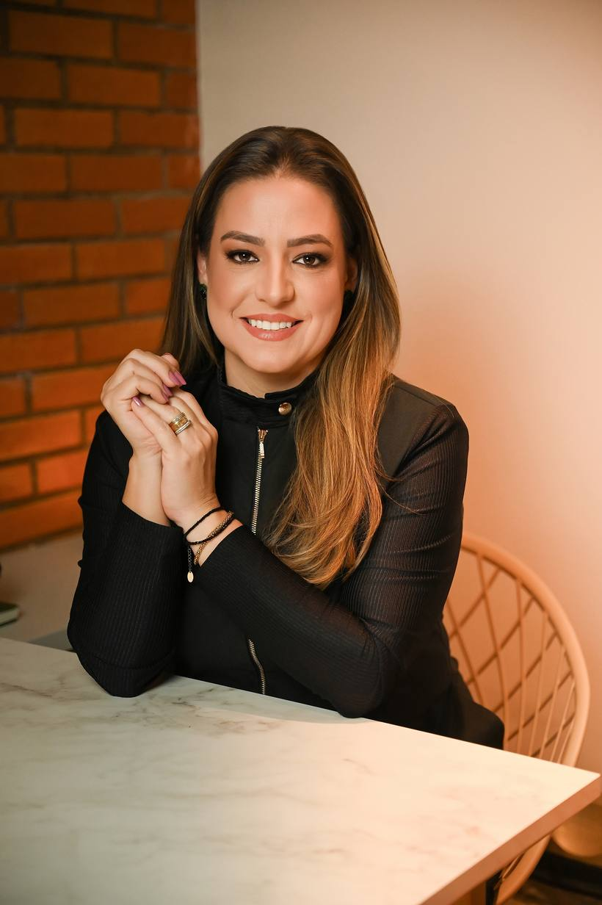
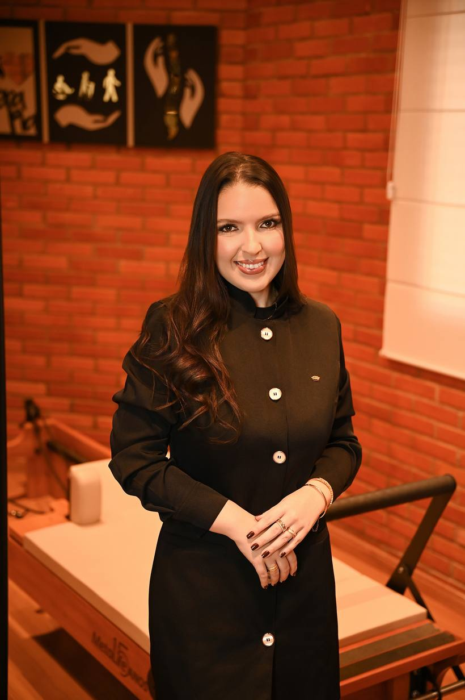

Tratar · a causa da dor
Dra. Celiane Velasque
Tratamento especializado da coluna
Hérnia de disco e dor ciática com abordagem conservadora, sem cirurgia, e foco em recuperar a capacidade funcional, em média, em seis semanas.
Acessar a página de coluna
Reabilitar · o movimento
Dra. Isabelita
Reabilitação e pós-operatórios
Tratamentos personalizados para reabilitação, pós-operatório ortopédico e pós-operatório de cirurgias plásticas.
Acessar a página de reabilitação
Manter · a autonomia
Dra. Joyce
Pilates clínico e continuidade
Continuidade depois da alta, com um ou no máximo dois pacientes por horário, para preservar o que foi recuperado e desenvolver força, equilíbrio e resistência.
Acessar a página de Pilates clínico